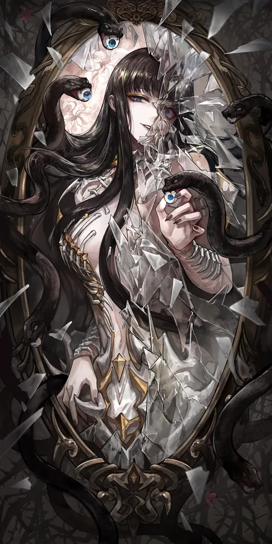

Overview
Primordial really is a twisted fellow. Letting a pure woman take the path of a Demoness would be so much better; however, generation after generation, you pass the damage down. And for what? Isn't the main goal merely to seek revenge on fate?
Sauron-Einhorn-Medici, Book 1, chapter 1111
Cheek, the Primordial Demoness, is the Sequence 0 God of the Demoness Pathway. According to the Demoness Sect, the Primordial Demoness is the true inheritor of the Original Creator. "She" was born out of Chaos and was the earliest to be born from the Creator's body. "She" is also the ultimate Ender that ends everything.3
The Mirror People believe that the Chaos Demoness they revere deep within the Mirror World is the true Primordial Demoness.4 Franca speculated that the White Primordial Demoness Figurine depicts the Primordial Demoness, while the Black Primordial Demoness Figurine depicts "Her" mirror self.5
"She" was formerly a male.
Honorific Name
Public
The Source of All Catastrophes; The Symbol of Destruction and the Apocalypse; The Demoness who controls Chaos (所有灾难的源头， 毁灭与末日的象征， 执掌混沌的魔女)
The last two lines of "Her" Honorific Name are hidden from most existences.1Book 2, chapter 454
Complete
Appearance
Without a doubt, the Primordial Demoness is the most charming woman in this world. Every living being who sees Her will inevitably be fascinated by Her, including me, my brothers and sisters, and even the undead in the Underworld. Even our father was inevitably attracted to some degree.
Azik Eggers, Book 2, chapter 900
The Primordial Demoness is an extremely beautiful woman, with charm at the level of concepts and authorities.7 All living beings and all things would be infatuated and entranced by "Her" slightest expression, perpetually in ecstasy.2Book 2, chapter 1105
"She" wears a dress seemingly made of white bones, "Her" black hair like venomous giant serpents - long, thick, and slick, with snake heads at the tips or rolling black and white eyes. "She" has pure, delicate, and beautiful white hands, they were not yet perfect, but they could evoke the most primitive and intense desires of anyone who saw them, instantly propelling them to heavenly pleasure from which they could never escape, just by being seen.2
"Her" true Mirror Self is a handsome man with a blood stained face.8
Background
According to Mr. Door, Cheek and the Artisan witnessed the second Blasphemy Slate with "Him".9
"Her" Apocalypse involved participating in the first fall of Black Emperor Solomon in the Fourth Epoch.10
Because the Demoness requires enduring the corruption of the Chaos Sea, "She" became corrupted by the Primordial God Almighty, though "His" influence was manageable at this time.11
In the period of peace between Solomon's revival and the War of the Four Emperors, Cheek and Tudor created the Special Mirror World with the help of Bethel Abraham, and had two children - the twins Krismona and Judith. This further awakened the Primordial God Almighty in "Them". This was because, in the First Epoch, the Primordial God Almighty, who accommodated the City of Calamity, hid one part of "His" resurrection arrangements around the City of Calamity and the two pathways of Demoness and Red Priest: When the Demoness combines with the Red Priest, "He" will become the Trinity, in the City of Calamity, within the Demoness and the Red Priest, simultaneously resurrecting, ultimately forming a whole, returning in the mirror. But "He" perished too early, and "His" arrangements were not as expected. The City of Calamity was sealed in the Western Continent by the Celestial Worthy of Heaven and Earth for Blessings, preventing "Him" from quickly becoming the Trinity; in addition, there was also another change on the City of Calamity's side. "His" consciousness revived in the Primordial Demoness and Alista Tudor, but without the City of Calamity's resonance and linkage, that consciousness grew very slowly, and was suppressed and controlled by the two.
Moreover, the place the Primordial Demoness and Alista Tudor consummated was not the ordinary mirror world, but the Special Mirror World created by Bethel Abraham, who had accommodated the Door Uniqueness and all three Key of Stars Beyonder Characteristics. The Oldest One's body of both male and female, plus the power of the two direct Pillars belonging to the Oldest One, gave birth to the Mirrored Original Creator, but "His" consciousness was very weak, like all newborn infants. This gave the Primordial Demoness and Alista Tudor a chance to merge with the Mirrored Original Creator, with "Them" each bearing the feminine and masculine side respectively, and then use this to control the City of Calamity. But the other Deities found out, and the War of the Four Emperors began, causing "Their" failure.
In the last moment, Tudor wanted to forcibly complete the merger, using this to pull all other Sefirot from the Western Continent, dragging the entire world to die, waiting for the Creator's symbolic manifestation in death. But Cheek disagreed because "They" had not yet become the Mirrored Original Creator, so "She" decided to let "Him" die for a while, and then resurrect "Him" later. "She" dealt Tudor the critical blow, while Salinger completed "His" life's culling, sending "His" soul into the River of Eternal Darkness. However, the initial progress made still resulted in the birth of an Alista Tudor in white armor, with only a tiny bit of self-awareness.12
There was a gap of over a 100 years between the end of the War of the Four Emperors and the beginning of the Pale Disaster. The Primordial Demoness' arrival to the Southern Continent was somewhere in the middle of this period. She declared to Death "Her" intention to avenge the Blood Emperor, to make all Seven Gods of the Northern Continent perish, and to bring the Blood Emperor's deity corpse back to the surface from Underground Trier.13
When Salinger accommodated the the Uniqueness of Red Priest, the Mirrored Original Creator underwent a mutation: it produced a certain self-awareness and ego. "She" was exactly like the Primordial Demoness, just in a black bone dress instead of a white one. To suppress "Her" and to continue merging, the Primordial Demoness let the consciousness of the Primordial God Almighty in "Her" further revive, seeking a certain balance. Since then, "She" had had to suppress the Primordial God Almighty's consciousness while fighting against the black version of "Herself.
Later on, the Primordial Demoness and Death joined forces to wreak havoc and create the Pale Disaster on the Northern Continent.14 In the end, the Seven Gods joined forces and defeated "Them", killing Death and causing the Primordial Demoness to suffer severe damage.15 After the Pale-White War, the Primordial Demoness fell into slumber, occasionally waking. All sect affairs are handled by high-ranking Demonesses titled by color.16 "She" had only managed to descend near the start of Book 1.
History
Lord of Mysteries
"She" tried to descend using Trissy as a vessel, which didn't succeed because her ring was destroyed by the Angel of Concealment. Later, Trissy used the historical projection of this ring to destroy one of the mausoleums George III built for "His" advancement ritual to Black Emperor, causing "Him" to fail "His" advancement at the cost of her life. It was revealed the Primordial Demoness had warned the Demoness Sect that Trissy had a strong self-destructive tendency, but they were not able to find her because Evernight was hiding her.17
"She" sided with Amon during Klein's Apotheosis Ritual. "She" appeared not long after Amon's main body was concealed by the Evernight Goddess, "She" was interfered with by Lilith.18 To be more precise, what "She" and the Hidden Sage really wanted was to immediately produce a Lord of Mysteries that doesn't have animosity towards "Them" to open the seal of the Western Continent and allow them access to the Sefirot there. "They" initially chose Amon because Klein was weaker than "Him" and was also hostile towards "Them". Later on, when the Celestial Worthy of Heaven and Earth for Blessings was on the verge of resurrecting, "They" didn't make any attempt to stop it because it would similarly achieve "Their" goal. This was because the pathways that "They" were in didn't belong to the three pathways that were controlled by the Lord of Mysteries, and "They" didn't have any feuds or conflicts of interest with "Him".19 20
Circle of Inevitability
She descended in the underground mausoleum of Morora through Julie, who was in possession of one of Cheek's Rings.21 She spared Lumian Lee, who was nearby, and instead threw him out of the special Mirror World there.22
Madam Magician speculated that if this wasn't one of Adam's arrangements, it meant the Primordial Demoness also hoped for a Beyonder who harbored hope for Alista Tudor's resurrection and was closer to the top powers of the two Calamity Pathways than Her to grow up according to the method currently considered closest to the correct answer, in order to achieve a goal that was very important and crucial to Her.23
This was later proven correct on The Day of Many Disasters, when Lumian Lee was forced to fuse with the Mirrored Original Creator's masculine side (the Alista Tudor in white armor) and feminine side (the Primordial Demoness in black bone dress), along with the mirrored Alista Tudor (black armor) and a split-off personality from the Primordial Demoness (white bone dress), and one Conqueror and Apocalypse Beyonder Characteristics. The Primordial God Almighty's consciousness also almost revived in him, manifesting as a chaotic face, before ultimately being stopped by The Fool's and Amon's interference. From then on, Lumian Lee gained the symbolism of both the masculine and feminine aspects of the Mirrored Original Creator.24
Cheek perished at the hands of Lumian and company in the Death of Primordial Demoness.25 Following The Apocalypse and Lumian's ascension to Calamity of Destruction, "She" now exists as a personality inside his dream, being the mayor of his dream city.
Related Mythical Items
- Cheek's Rings
Trivia
- According to the Second Blasphemy Slate, both Primordial Demoness and Chaos Demoness are alternate names of Demoness.26 These names predated Cheek's deification, and referred both to the feminine aspect of a Demoness as an extension of the Primordial God Almighty, and to the Demoness' authority over the return of all things to Chaos and the Primordial state.27
- "She" had a true love before becoming a God (see Demoness), which hadn't been revealed. The author mentioned there might be a side story about this.28
Translations
| Language | Name |
|---|---|
| Chinese | 原初魔女 |
| Thai | นางอสูรปฐมกาล (Print Release) , แม่มดบรรพกาล (Digital Release) |
References
- Book 2, chapter 454.
- Book 2, chapter 1105.
- Book 1, chapter 66.
- Book 2, chapter 723.
- Book 2, chapter 479.
- Book 2, chapter 1106.
- Book 2, chapter 900.
- Book 2, chapter 1139.
- Book 1, chapter 1134.
- Author's WeChat post mgod, part 9.
- Book 2, chapter 1141.
- Book 2, chapter 1107.
- Book 2, chapter 900.
- Book 1, chapter 217.
- Book 1, chapter 588.
- Book 2, chapter 801.
- Book 1, chapter 1150.
- Book 1, chapter 1376.
- Book 1, chapter 1377.
- Book 1, chapter 1379.
- Book 2, chapter 833.
- Book 2, chapter 834.
- Book 2, chapter 889.
- Book 2, chapter 1108.
- Book 2, chapter 1141.
- Book 1, chapter 1347.
- Book 2, chapter 1132.
- Author's WeChat post death_rituals, part 7.
Source
Article adapted from the Primordial Demoness article on the Lord of the Mysteries Fandom wiki (CC BY-SA). Chapter numbers follow that article's citation format.
Image gallery
